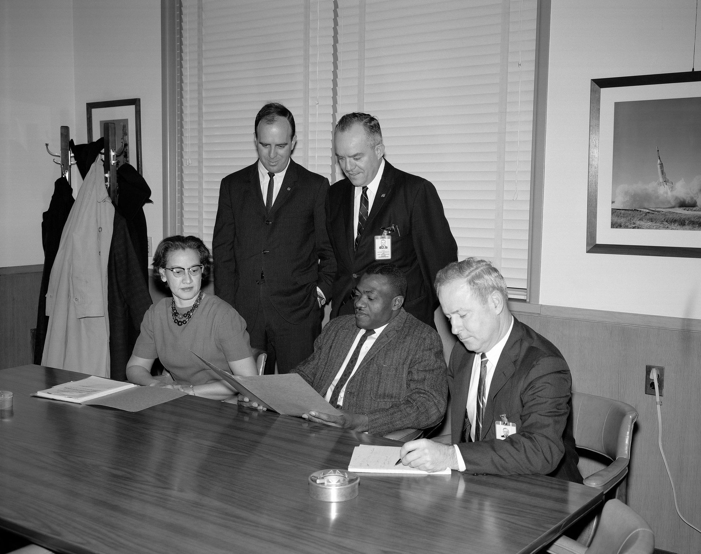

Biografia
Katherine nasceu em 1918, em White Sulphur Springs, Virgínia Ocidental, condado de Greenbrier, filha de Joshua e Joylette Coleman. Uma entre cinco filhos, seu pai trabalhava como madeireiro, agricultor e carpinteiro no Hotel Greenbrier. Sua mãe era ex-professora. Muito cedo, Katherine mostrou talento para matemática e seus pais enfatizavam a importância da educação para os filhos. Como o condado de Greenbrier não oferecia escola para estudantes negros após a oitava série, as crianças da família foram para o ensino médio no condado de Kanawha, no chamado Instituto, onde hoje é a Universidade de West Virginia. A família dividia seu tempo entre os estudos durante o ano e o verão em Sulphur Springs. “Eu contava tudo. Contava os passos na rua, os passos até a igreja, o número de pratos que eu tinha lavado. Tudo o que pudesse ser contado.” Katherine formou-se no ensino médio aos 14 anos. Aos 15 anos, ela iniciou os estudos na universidade, onde estudou todos os cursos que ofereciam matemática. Vários professores apadrinharam-na, incluindo a matemática e química Angie Turner King, que a orientou durante o ensino médio, e W.W. Schiefflin Claytor, o terceiro negro a receber um doutorado em matemática no país, que chegou a criar novos cursos de matemática especialmente para Katherine. Ela se formou em 1937, com notas máximas em matemática e francês, aos 18 anos. Depois da formatura, ela se mudou para Marion, Virginia, para ensinar matemática, francês e música em uma escola de ensino infantil. Em 1939, Katherine tornou-se a primeira negra a se graduar na Universidade da Virgínia Ocidental, em Morgantown, e a única mulher entre três estudantes negros selecionados a integrar a graduação depois da decisão da Suprema Corte dos Estados Unidos, que decidiu separar as escolas e universidades para negros e brancos. As universidades estaduais seriam instituições para brancos e a Universidade Lincoln deveria criar cursos para atender a negros. Caso não houvesse cursos, outras universidades deveriam atender aos alunos. Em 1939, ela se casou com James Francis Goble e constituíram família. O casal teve três filhas: Constance, Joylette e Katherine. Em 1956, James morreu devido a um tumor inoperável no cérebro. Em 1959, Katherine se casou com o tenente-coronel James A. Johnson e continuou sua carreira na NASA. Katherine cantou no coro da igreja presbiteriana Carver por cinquenta anos e era membro da sororidade Alpha Kappa Alpha. Katherine teve seis netos e quatro bisnetos e vivia em Hampton, Virginia. Ela continuou a encorajar estudantes a perseguir suas carreiras em ciência e tecnologia. Ela passou seus últimos anos incentivando os alunos a entrar nas áreas de ciência, tecnologia, engenharia e matemática (STEM). A família morou em Newport News, Virgínia, desde 1953, primeiro com James Goble até sua morte em 1956 e desde 1959 com James Johnson. Seu casamento com Johnson durou 60 anos, até sua morte em março de 2019, aos 93 anos de idade. Katherine, que tinha seis netos e onze bisnetos, morava em Hampton, Virgínia. Ela incentivou seus netos e alunos a seguirem carreiras profissionais em ciência e tecnologia. Ela participou do mesmo coro da Igreja Presbiteriana Carver por 50 anos. Ela faleceu em um lar de idosos em Newport News em 24 de fevereiro de 2020, com 101 anos de idade. Após sua morte, o administrador da NASA, Jim Bridenstine, a descreveu como “uma heroína americana” e declarou que “seu legado pioneiro nunca será esquecido”.
Carreira
Katherine optou pela matemática, com interesse em pesquisa na área, um caminho com muitas portas fechadas para negras na época. Os primeiros empregos que conseguiu eram para lecionar. Em uma reunião de família, um parente mencionou que a NACA, que viria a se tornar a NASA, estava com processo seletivo aberto para mulheres, em especial negras, para seu departamento de navegação. Katherine inscreveu-se em 1953 e foi imediatamente aceita no novo time da NASA.

Contribuições
Sua habilidade com matemática era incrível, e ela logo se tornou uma líder no cálculo de trajetórias, sendo uma parte essencial da equipe que calculou a rota para a primeira missão tripulada à Lua, em 1969. Ela fez a maior parte dos cálculos do projeto e também ficou encarregada de verificar as
contas dos novos computadores mecânicos da Nasa. A matemática tinha de ser perfeita para que os tripulantes da Apolo voltassem à Terra em segurança. A missão Apolo foi um sucesso, e as importantes
contribuições de Katherine a tornaram possível!
Mais tarde, ela trabalhou em muitos projetos importantes da Nasa, inclusive no programa dos ônibus espaciais e nos planos para a missão a Marte.
O trabalho dela ajudou os astronautas a visitar as estrelas e voltar à Terra em segurança. Ela se aposentou em 1986, depois de 33 anos de trabalho.
